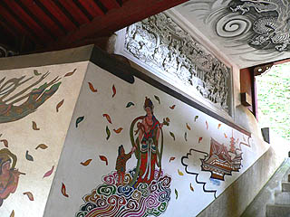
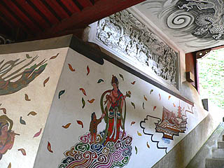

金蔵寺/神奈川県横浜市
横浜市港北区、日吉地区。
商店街にも程近い街中に金蔵寺という寺がある。
清和天皇が開基したといわれる歴史を持ち徳川家康、秀忠の寄進した梵鐘があるという超正統派古刹寺院である。
後で調べてみたら何と敷地がドーンと2万坪！
しかしそんな広さを感じさせないのはひとえに駐車場の狭さ・・・ではなく、寺域の大部分が裏山だからで、実際に山門から境内を覗いてみるとそんな広い寺には見えないのである。
しかし、境内を歩いていくと次から次へと総天然色炸裂アイテムがとめどなく続く色んな意味で奥深い寺であった。
山門を潜って正面に本堂がある。本堂自体は普通の建物だがその正面に立つ灯籠は早くもド派手ビームが放出されている。
灯籠の正面には「一隅を照らす」と書かれていた。一隅を照らすどころか灯籠の周辺を焼き付くすかのような勢いだ。
裏には「傅教大師御生誕千二百年記念」とあったので1970年頃のものなのだろうか。
その割には新しく見えるが、こまめに塗り直しているのだろう。
考えてみたら本堂の前に立つ灯籠というものは石か金属のものが多いが、ここのは木製。
それだけに細かい彫刻や派手なペイントが可能かと思われるが、これはまだまだ序の口だったのだ。
灯籠の右には水盤舎。
これまた緻密な彫刻に彩られた派手な水盤舎だ。
柱には龍が巻き付き、手摺には変な顔がくっ付いていた。
中央の飾り梁は炎が巻き付く剣だった。
こういう細かいところまでアイデアに満たされているのを見ると、単に派手なだけでなく、もっと激しい真剣味が感じられて返って恐ろしい。
灯籠の左には六地蔵堂が。これまた欄間にド派手なレリーフが施されている。
 建材は近在の長者柱を再使用しているそうな。
欄間は半立体のレリーフ。もっちろんド派手。
天上の格子には子供の書いた板絵が嵌め込まれていた。
それにしてもこの彫刻、上手いのだろうか？
緻密ではある。人物のプロポーションも悪くない。しかし全体から漂うこのポンチ感は何？
建材は近在の長者柱を再使用しているそうな。
欄間は半立体のレリーフ。もっちろんド派手。
天上の格子には子供の書いた板絵が嵌め込まれていた。
それにしてもこの彫刻、上手いのだろうか？
緻密ではある。人物のプロポーションも悪くない。しかし全体から漂うこのポンチ感は何？
もしもこのレリーフが白木彫りだったらこんなにポンチな感じにはならなかったように思えてならない。
彫刻の出来云々よりも塗り方が大きく影響するという事なのだろうか。
まあ、あたしゃこういう塗り方は好きなんですけどね。
一通り本堂の前から境内を見渡して、さて帰ろうか、と思ったところ・・・
本堂の裏手に凄いモノがありました。
弁天堂と書かれたそのお堂は2階建て、というのだろうか、不思議な形状のお堂であった。
1階、に見える部分には建物としての役割は何もない。中央に階段があるだけだ。
しかし、機能は無いが欄間にはびっしりと彩色レリーフが施されている。もう、ココまで来ると何がなんだか訳が判らなくなる。
左の天女が書かれている漆喰壁も特に内側に部屋がある訳ではない。左手にある墓地の斜面の土留めになっているのだ。
土留めの位置の関係で階段も中央よりやや右側にある。その左右非対称なアンバランスさが返ってこの弁天堂1階部分の特徴ともいえよう。
欄間に施されたレリーフは六地蔵堂と同じ作者のものだろう。
微妙な味わいのレリーフである。
白い部分は一見漆喰の鏝絵のようだが、木彫をびっちり白ペイントで塗り込めているのだ。
右手を挙げたポーズは釈迦誕生物語なのだろう。でも、このレリーフ自体が天上天下唯我独尊ですな。
 左の七福神のうち何体かはまだ未着色。着色された七福神サイドはどこかディズニーの七人の小人を思わせる毒ファンシーな色使い。
三猿などが彫られているのを見ると・・・もしかして、日光東照宮意識しまくり？

土留めの部分に描かれた天女の絵も同じ作者によるものとは思えない仕上がり。
また、その上にある未着色のレリーフも立体感があってかなり玄人はだしの仕事である。
このレリーフも色を塗っちゃうとあんな感じになっちゃうんでしょうか？
階段を登ると正面には小さな稲荷社、で、登って来た階段を折り返すと2層目の弁天堂がある。
内部は、まあ、極彩レリーフに比べたら普通でした。
さて。
この寺、敷地2万坪を誇る寺院である。その大半は裏山部分なのだが、そこに奥の院があり、そこに至る道中にも侮れない物件がある。
小さな洞窟には弁天様がまつられており、その入口にはこれまた派手派手なレリーフが施されている。
白蛇、亀などがあしらわれたそのレリーフは先程の弁天堂に比べると若干大雑把な出来。
もしかしたらかなり初期につくられたものなのかもしれない。
左の七福神のうち何体かはまだ未着色。着色された七福神サイドはどこかディズニーの七人の小人を思わせる毒ファンシーな色使い。
三猿などが彫られているのを見ると・・・もしかして、日光東照宮意識しまくり？

土留めの部分に描かれた天女の絵も同じ作者によるものとは思えない仕上がり。
また、その上にある未着色のレリーフも立体感があってかなり玄人はだしの仕事である。
このレリーフも色を塗っちゃうとあんな感じになっちゃうんでしょうか？
階段を登ると正面には小さな稲荷社、で、登って来た階段を折り返すと2層目の弁天堂がある。
内部は、まあ、極彩レリーフに比べたら普通でした。
さて。
この寺、敷地2万坪を誇る寺院である。その大半は裏山部分なのだが、そこに奥の院があり、そこに至る道中にも侮れない物件がある。
小さな洞窟には弁天様がまつられており、その入口にはこれまた派手派手なレリーフが施されている。
白蛇、亀などがあしらわれたそのレリーフは先程の弁天堂に比べると若干大雑把な出来。
もしかしたらかなり初期につくられたものなのかもしれない。
情報提供はまんじまるさんです。
2005.8.
珍寺大道場 HOME